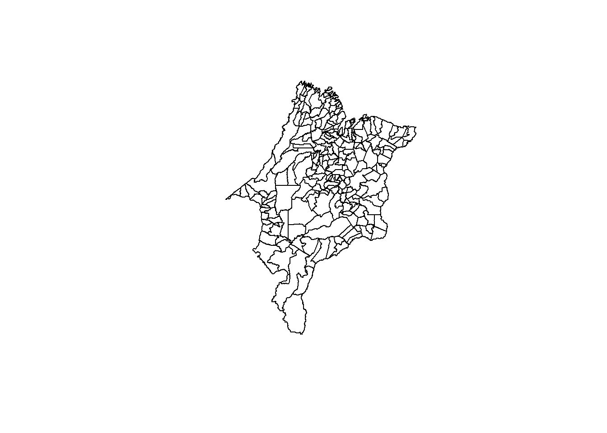
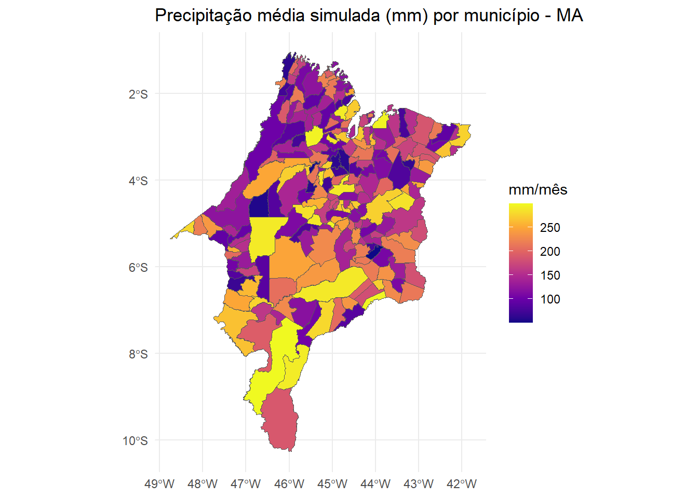

Warning: pacote 'geobr' foi compilado no R versão 4.4.3Carregando namespace exigido: sfWarning: pacote 'ggplot2' foi compilado no R versão 4.4.3geobr e integração com dados meteorológicos
Este capítulo apresenta o uso de dados espaciais vetoriais com o pacote geobr, integrando com dados climáticos simulados ou observados em território brasileiro.
Dados vetoriais representam feições geográficas com pontos, linhas ou polígonos. No contexto meteorológico, podemos utilizar mapas vetoriais para:
geobr
Warning: pacote 'geobr' foi compilado no R versão 4.4.3Carregando namespace exigido: sfWarning: pacote 'ggplot2' foi compilado no R versão 4.4.3Vamos carregar o mapa dos municípios do Maranhão:
maranhao <- read_municipality(code_muni = "MA", year = 2020)Using year/date 2020plot(maranhao$geom)
##️ 4. Simulando dados meteorológicos por município
ggplot(data = maranhao_clima) +
geom_sf(aes(fill = precipitacao_mm)) +
scale_fill_viridis_c(option = "C") +
labs(title = "Precipitação média simulada (mm) por município - MA",
fill = "mm/mês") +
theme_minimal()
read_municipality().ggplot2 usando geom_sf().